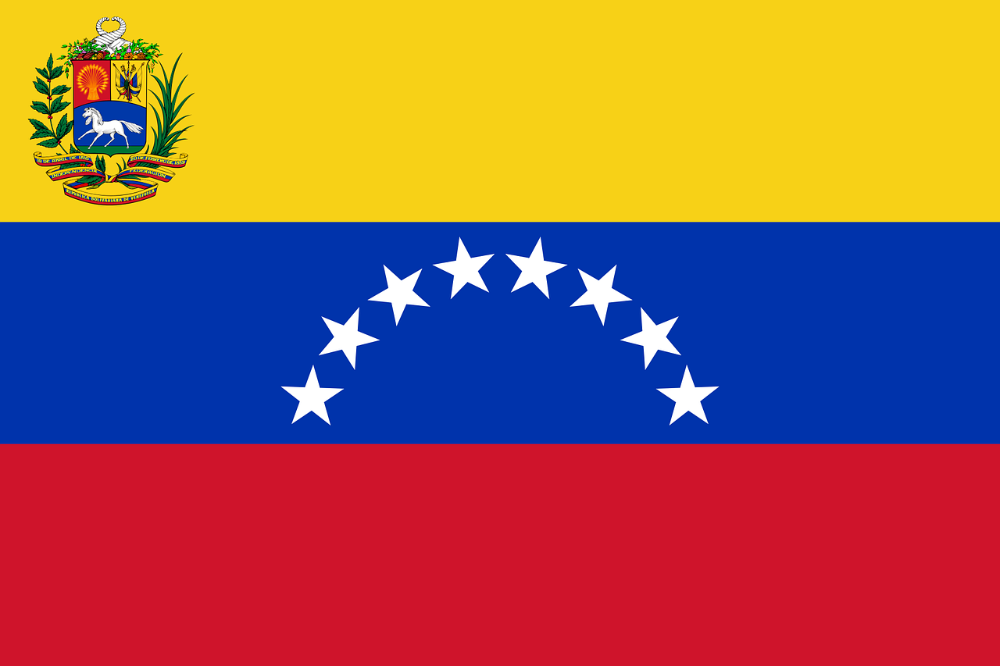

German Gerardo Sanchez Lobo
About Me
¡Hola! Mi nombre es German. Soy desarrollador de software profesional y consultor en automatización de procesos. Me apasiona crear flujos eficientes, trabajar con agentes de IA y diseñar arquitecturas limpias para resolver problemas complejos.
Caracas, Dto. Capital, Venezuela

Venezuela es un país situado en la costa norte de América del Sur. Es famoso por su diversidad geográfica, que incluye playas caribeñas, majestuosas montañas andinas, los llanos y el Salto Ángel, la caída de agua más alta del mundo.